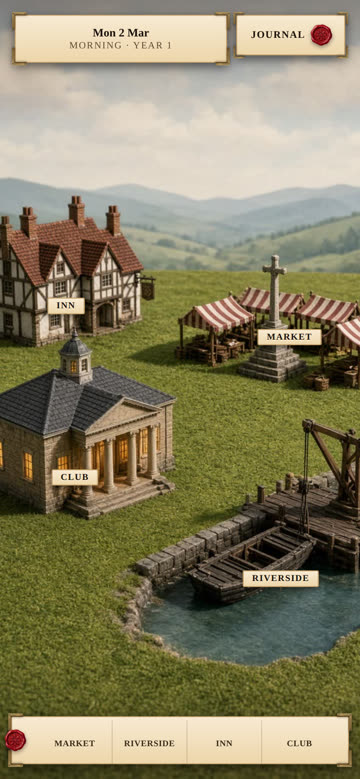
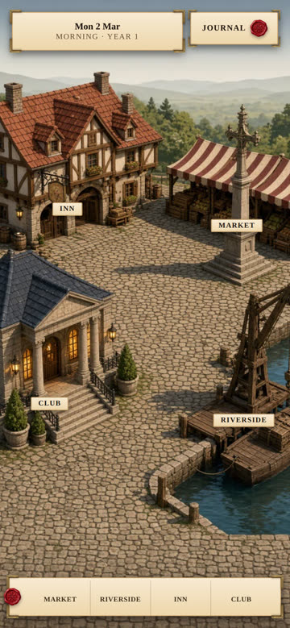
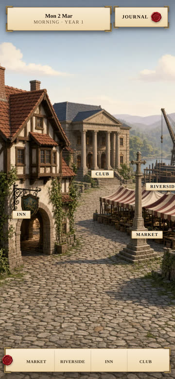
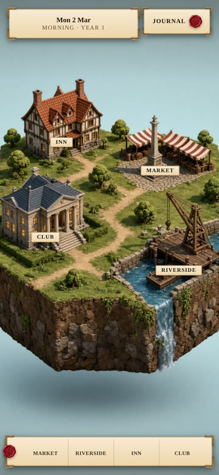
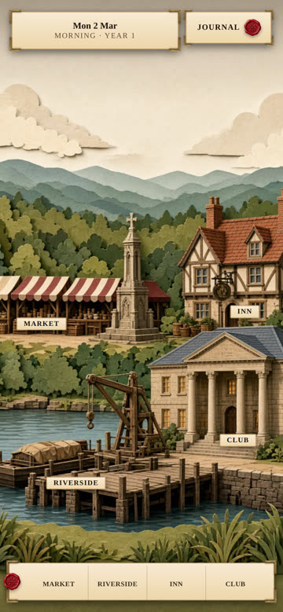
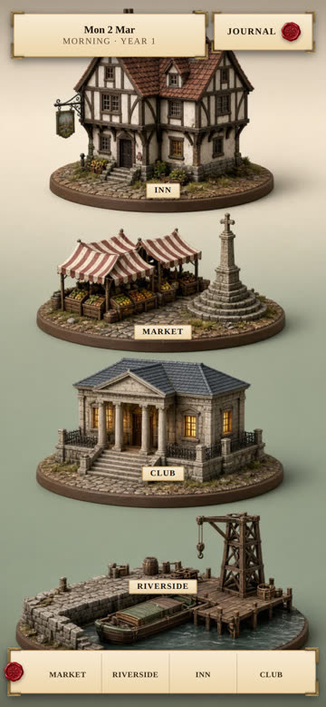

The axis here is the camera, not the paint. All six put the Inn, Market, Club and Riverside
in one 390×844 phone frame under the live paper chrome, with a tappable tag on each landmark.
The first four give you a flat background plane with solid pieces standing in front of it, which is
the thing an aerial map cannot do.

V1 · backdrop + tableFlat painted sky-and-hills board behind; four models on a flat green mat in front. Low camera, about 20°.

V5 · town squareStreet scale. You see the fronts, doors and signs. Four landmarks around one cobbled square.

V2 · street levelLooking down a lane, landmarks stepping back in layers of depth to a hazy flat horizon.

V4 · floating slabOne solid block of land against plain sky. Hardest separation of object from background.

V3 · paper theatreSeparate flat cut layers standing one behind another with visible gaps. Literal 2.5D.

V6 · four piecesFour based models against a seamless backdrop. Reads as a place picker, not a town.
The earlier aerial set, for contrast
These eight were the miss. They vary the paint finish but share one bird's-eye camera, so there is
no background plane for anything to stand against — the ground is the entire picture.